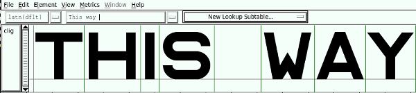

The Alfphabet family is based on the Belgian road signage system in use from 1945-1975. It came from Minneapolis to Brussels with 3M, an American company working for the Marshall plan after the end of world war II.
Alfphabet IV was redrawn by Pierre Huyghebaert and Ludi at Speculoos studio in 2007.
—
2011/9/17 Benoit Brunel xxx@gmail.com>:
> Justement ça concerne l’article, j’ai besoin de quelques informations
> et je sais que tu as les réponses.
> Tu me disais que Michel Olive avait proposé un système de fonts pour…
> la SNCB ou la STIB ?
> Pour les deux, quel est le système en place? D’où vient-il? Belge?
—
2011/10/2 Pierre Huyghebaert xxx@speculoos.com>
Michel Olyff a répondu à un appel de ce qui s’appelait le fond des routes, national, vers 1975.
Ils utilisaient jusque là des caractères que les planches appellaient Alfabet ou Alphabet selon la langue.
Il y avait le type I, II, III, IV et V soit des chasses différentes en majuscules et une “police” juste pour les minuscules!
Son nouveau système signalétique une fois au point, très moderniste type Frutiger, il a fait produire une étude comparative de lisibilité, sur un mode scientifique typique des années 70.
Mais le fonctionnaire cadre en poste à l’époque, que j’ai rencontré à la fin de sa carrière et juste après le démantèlement régional de son institution fin des années 90, m’a expliqué avoir reculé devant le prix demandé par Olyff, pourtant raisonnable : 800000 francs belges soit 20000 euros, qui à l’époque devait bien valoir le double. Il a décidé d’opter pour la SNV suisse, gratuite…
La SNCB continue parfois a utiliser l’Alfphabet, vaille que vaille, dans des versions très mal vectorisées, et mélangées au pire, type Arial.
La STIB l’a aussi utilisé mais à depuis longtemps varié ses choix, largement vers l’Helvetica dans la métro, et depuis quelques années avec son changement d’identité, une fonte custom transitionnelle à la hollandaise.